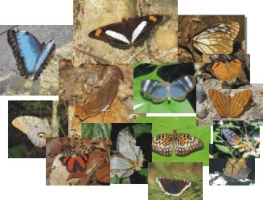
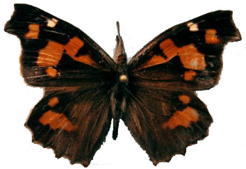
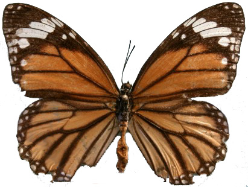
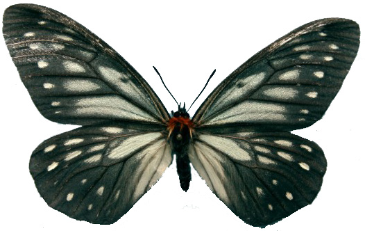
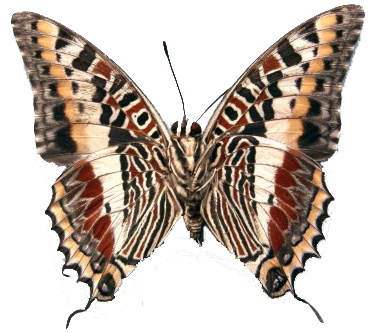
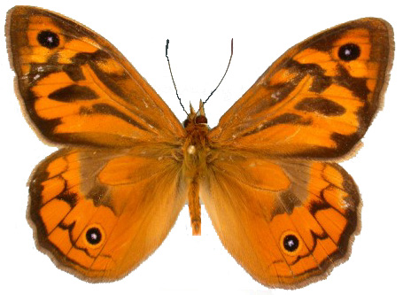
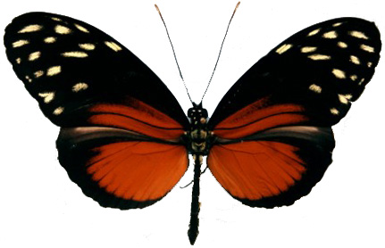

Nymphalidae

The butterfly family Nymphalidae contains about 6000 species that have been placed into about 550 genera. Currently these genera are placed into 12 subfamilies and 40 tribes. The relationships of major lineages in Nymphalidae have been unclear for a long period, but recent work by the NSG, Andrew Brower and André Freitas are resolving these issues based on both molecular and morphological data. Other colleagues and collaborators have studied the phylogenetic relations of subgroups within Nymphalidae, and these studies are referred to in the relevant places throughout our pages. The current state of knowledge of the phylogenetic relationships of nymphalid butterflies can be found on the Tree of Life web project, which the NSG is helping to build up. The Tree of Life web project pages will be linked to throughout the NSG pages for phylogenetic hypotheses of the various clades in Nymphalidae.

The monophyly of Nymphalidae has been the subject of debate, which was not addressed in the previous studies. Through a collaboration with four other labs, the NSG has been able to test the monophyly of Nymphalidae with a large dataset consisting of morphological data and sequences from three genes for a sample of butterflies and skippers. The results of our study showed, among other things, that the family Nymphalidae was monophyletic and sister to Lycaenidae+Riodinidae (see Wahlberg et al. 2005: Proc. Roy. Soc. 272:1577-1586). However, the monophyly of Nymphalidae was not strongly supported and will require further study.
In addition to broad studies of the whole family, we have been looking in more detail at relationships of species within the subfamily Nymphalinae, as well as Satyrinae. With this new found understanding of relationships in these groups, we have with our collaborators been able to study the evolution of host plant use in the butterflies. In fact our phylogenetic hypotheses for Nymphalidae and Nymphalinae have helped develop an entirely new hypothesis about why phytophagous insects are so speciose. This hypothesis posits that periodical broadening of host plant repertoire and subsequent specialization is the driving force behind increased levels of speciation in phytophagous insects (see Janz et al. 2006).
The large amount of molecular data generated by the NSG is now allowing us to investigate the timing of divergences in various clades. With knowledge of when important divergences have happened, we will get a clearer picture of where and how they happened, leading hopefully to a better understanding of how the butterfly family has evolved.
The links below to the subfamilies describe the state of knowledge of the groups and our possible work on them. Images of voucher specimens are also available for a large number of our DNA extracts through our NSG Voucher Specimen Database. You will also find links to regional checklists with information on species we have sampled and species which we still need for our work.
The subfamilies of Nymphalidae
|  |  |  |  |  |  |
| Libytheinae | Danainae | Calinaginae | Charaxinae | Satyrinae | Heliconiinae |